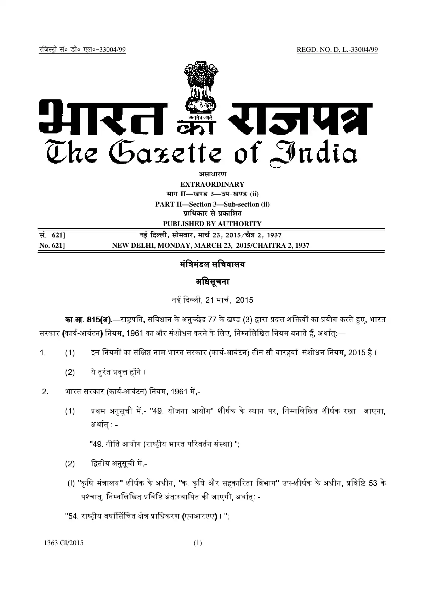
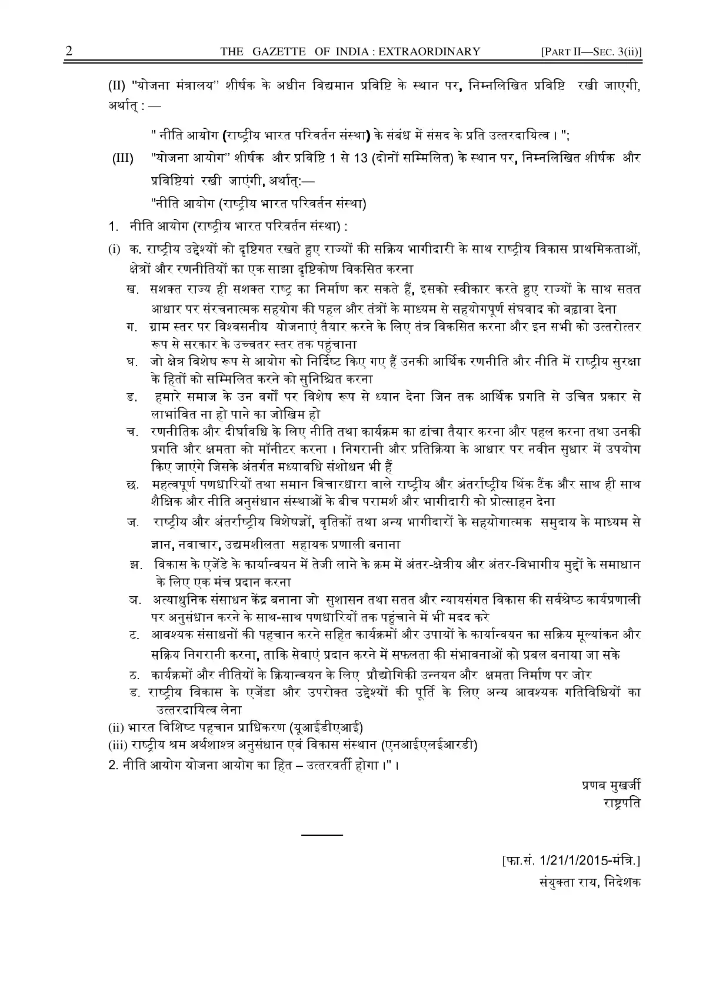
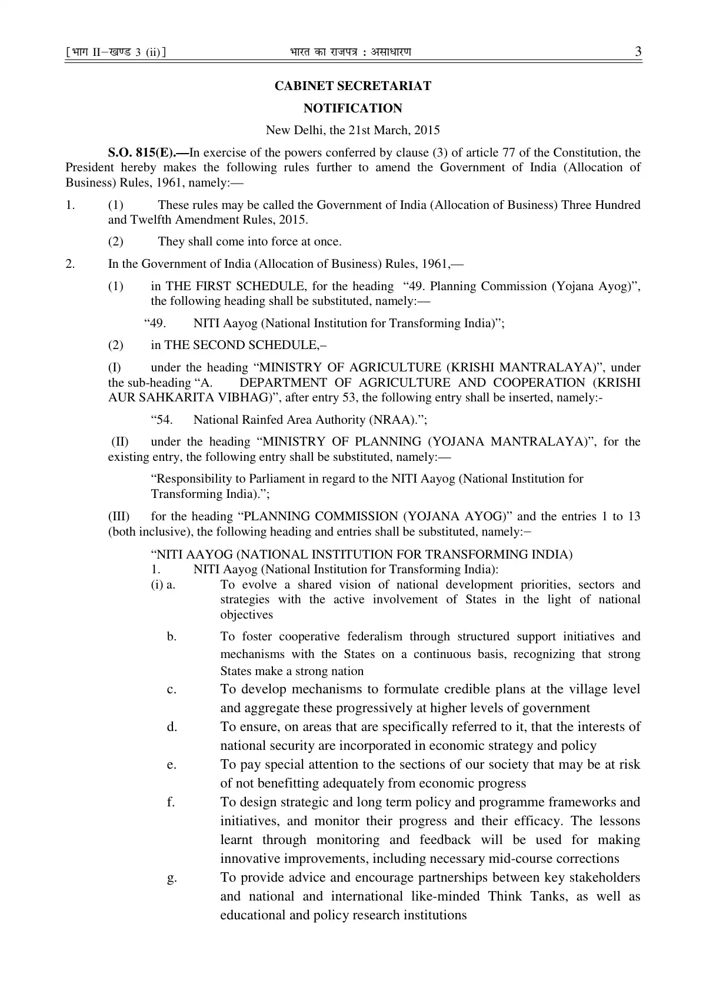
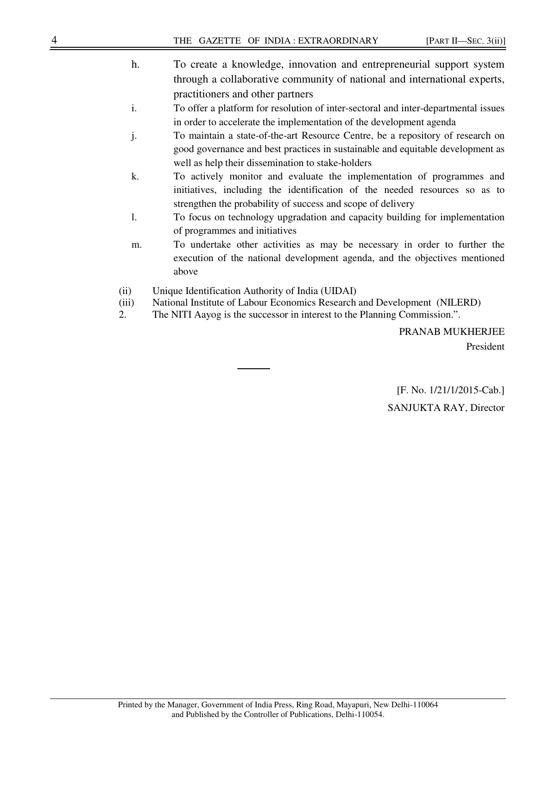

Amendment #312 (S.O. 815(E), 2015)
4 changes: 1 to the First Schedule, 3 to the Second Schedule. 4 applied
What it did to the ministries
- endedThe Planning Commission is abolished… change 1, 4 · histories: Planning Commission
- born…and NITI Aayog is created in its place. change 1, 4 · histories: NITI Aayog
The order, page by page
Page 1 of 4

Page 2 of 4

Page 3 of 4

1234Schedule 1 › Planning Commission
- 49. NITI Aayog (National Institution for Transforming India)
applied at schedule 1 › department 49 in the Rules after #312
read hindi missing
after Schedule 2 › MINISTRY OF AGRICULTURE › DEPARTMENT OF AGRICULTURE AND COOPERATION › entry 53
- 54. National Rainfed Area Authority (NRAA).
applied at schedule 2 › ministry MINISTRY OF AGRICULTURE › department A › part IV › entry 54 in the Rules after #312
Schedule 2 › MINISTRY OF PLANNING
- Responsibility to Parliament in regard to the NITI Aayog (National Institution for Transforming India).
applied at schedule 2 › ministry MINISTRY OF PLANNING in the Rules after #312
Schedule 2 › PLANNING COMMISSION
- NITI AAYOG (NATIONAL INSTITUTION FOR TRANSFORMING INDIA)
- 1. NITI Aayog (National Institution for Transforming India):
- i. a. To evolve a shared vision of national development priorities, sectors and strategies with the active involvement of States in the light of national objectives
- b. To foster cooperative federalism through structured support initiatives and mechanisms with the States on a continuous basis, recognizing that strong States make a strong nation
- c. To develop mechanisms to formulate credible plans at the village level and aggregate these progressively at higher levels of government
- d. To ensure, on areas that are specifically referred to it, that the interests of national security are incorporated in economic strategy and policy
and 12 more
- e. To pay special attention to the sections of our society that may be at risk of not benefitting adequately from economic progress
- f. To design strategic and long term policy and programme frameworks and initiatives, and monitor their progress and their efficacy. The lessons learnt through monitoring and feedback will be used for making innovative improvements, including necessary mid-course corrections
- g. To provide advice and encourage partnerships between key stakeholders and national and international like-minded Think Tanks, as well as educational and policy research institutions
- h. To create a knowledge, innovation and entrepreneurial support system through a collaborative community of national and international experts practitioners and other partners
- i. To offer a platform for resolution of inter-sectoral and inter-departmental issues in order to accelerate the implementation of the development agenda
- j. To maintain a state-of-the-art Resource Centre, be a repository of research on good governance and best practices in sustainable and equitable development as well as help their dissemination to stake-holders
- k. To actively monitor and evaluate the implementation of programmes and initiatives, including the identification of the needed resources so as to strengthen the probability of success and scope of delivery
- l. To focus on technology upgradation and capacity building for implementation of programmes and initiatives
- m. To undertake other activities as may be necessary in order to further the execution of the national development agenda, and the objectives mentioned above
- ii. Unique Identification Authority of India (UIDAI)
- iii. National Institute of Labour Economics Research and Development (NILERD)
- 2. The NITI Aayog is the successor in interest to the Planning Commission.
applied at schedule 2 › ministry PLANNING COMMISSION in the Rules after #312
read hindi missing, read page break
Page 4 of 4

How this document was read
From the Government of India (Allocation of Business) Rules, 1961 and their amendments, as published by the Cabinet Secretariat (cabsec.gov.in), read by orgpedia. The readings of the older scanned gazettes have known gaps.